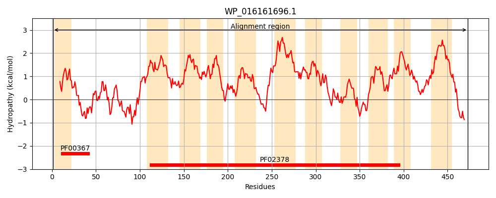
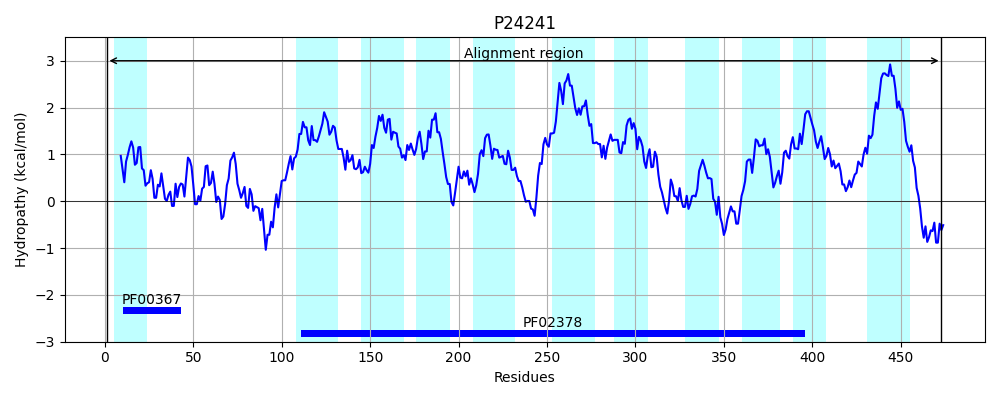
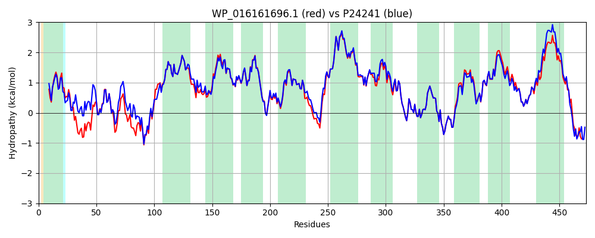

Hit Accession: P24241
Hit TCID: 4.A.1.2.3
Hit Description: gnl|BL_ORD_ID|9492 gnl|TC-DB|P24241|4.A.1.2.3 PTS SYSTEM, ARBUTIN-, CELLOBIOSE-, AND SALICIN-SPECIFIC IIABC COMPONENT (EIIABC-ASC) (ARBUTIN-, CELLOBIOSE-, AND SALICIN-PERMEASE IIABC COMPONENT) (PHOSPHOTRANSFERASE ENZYME II, ABC COMPONENT) (EC 2.7.1.69) (EII-ASC) - Escherichia co
Mach Len: 473
e:0.000000
Query TMS Count : 11
Hit TMS Count: 11
TMS-Overlap Score: 12.300000
Predicted Substrates:CHEBI:9002;salicin, CHEBI:2806;hydroquinone O-beta-D-glucopyranoside, CHEBI:3522;cellobiose
BLAST Alignment:
Score: 2157 , Bit scores: 835 bits, E-value: 0.0e+00, Alignment length: 473, Percentage identity: 89
Query: 1 MSKNYAALAQQIVAAIGGVDNVAAVTHCMTRLRFVVKDDEKVDSPTLKGLTGVLGVVRSDNQCQVIIGNTVSQAYREVVNLLPGDLRPAEPQGKAPLTLKRIGAGILDALIGTMSPLIPAIIGGSMVKLLAMILEMSGALPKGSPTLTLLTLIGDGAFFFLPLMVAASAAVKFKTNMSLAIAIAGVLVHPGFIELMAKAAQGEHVEFAFIPVTAVKYTYTVIPALVMTWCLSYIERWVDRITPAVTKNFLKPMLIVLIAAPLAILLIGPLGIWIGSAISALVYTIHSYLGWLSVAIMGGLWPLLVMTGMHRVFTPTIIQTIAETGKEGMVMPSEIGANLSLGGSSLAVAWKTKNPELRQTALAAAASAILAGISEPALYGVAVRLKRPLIASLISGFICGAVAGIAGLASHSMAAPGLFTSVQFFDPANPMTIVWVFGVMALSVVLSFALTLILGFEDIPVEQAAADARARQA 473
M+KNYAALA+ ++AA+GGVDN++AVTHCMTRLRFV+KDD +DSPTLK + GVLGVVRSDNQCQVIIGNTVSQA++EVV+LLPGD++PA+P GK LTL+RIGAGILDALIGTMSPLIPAIIGGSMVKLLAMILEMSG L KGSPTLT+L +IGDGAFFFLPLMVAASAA+KFKTNMSLAIAIAGVLVHP FIELMAKAAQGEHVEFA IPVTAVKYTYTVIPALVMTWCLSYIERWVD ITPAVTKNFLKPMLIVLIAAPLAILLIGP+GIWIGSAISALVYTIH YLGWLSVAIMG LWPLLVMTGMHRVFTPTIIQTIAETGKEGMVMPSEIGANLSLGGSSLAVAWKTKNPELRQTALAAAASAI+AGISEPALYGVA+RLKRPLIASLISGFICGAVAG+AGLASHSMAAPGLFTSVQFFDPANPM+IVWVF VMAL+VVLSF LTL+LGFEDIPVE+AAA AR Q+
Sbjct: 1 MAKNYAALARSVIAALGGVDNISAVTHCMTRLRFVIKDDALIDSPTLKTIPGVLGVVRSDNQCQVIIGNTVSQAFQEVVSLLPGDMQPAQPVGKPKLTLRRIGAGILDALIGTMSPLIPAIIGGSMVKLLAMILEMSGVLTKGSPTLTILNVIGDGAFFFLPLMVAASAAIKFKTNMSLAIAIAGVLVHPSFIELMAKAAQGEHVEFALIPVTAVKYTYTVIPALVMTWCLSYIERWVDSITPAVTKNFLKPMLIVLIAAPLAILLIGPIGIWIGSAISALVYTIHGYLGWLSVAIMGALWPLLVMTGMHRVFTPTIIQTIAETGKEGMVMPSEIGANLSLGGSSLAVAWKTKNPELRQTALAAAASAIMAGISEPALYGVAIRLKRPLIASLISGFICGAVAGMAGLASHSMAAPGLFTSVQFFDPANPMSIVWVFAVMALAVVLSFILTLLLGFEDIPVEEAAAQARKYQS 473 | Protein Hydropathy Plots: |
|---|
|  |  |
Pairwise Alignment-Hydropathy Plot:
|
|---|
|  |